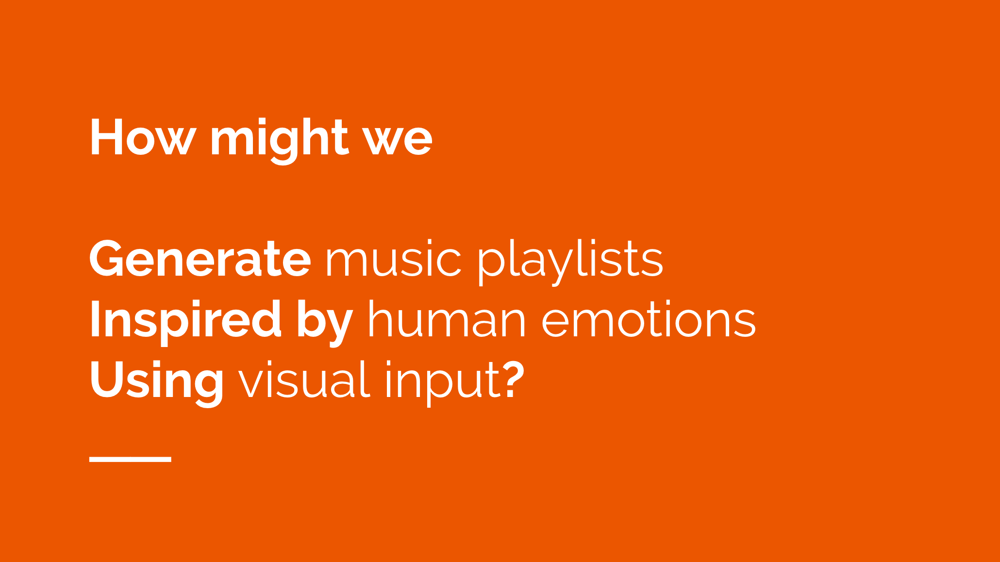
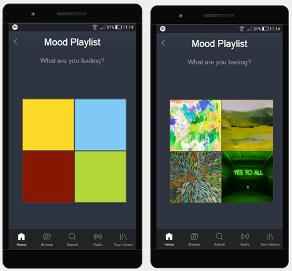

Incorporating mood through visuals as a core element in playlist creation
The objective of this project was to redesign an existing music service in order to better align with user goals and become more pleasurable to use. Under the title of “The soundtrack of our lives”, we proposed the idea of providing the users with the perfect songs for their current mood, because usually people just want to listen to music that fits with their feelings.

We wanted to create a “mood playlist generator” which aligns with user’s taste in music and current mood. For detecting the mood of the user, the tool would show a set of visual elements, constituted by colors and images, under the question: “how are you feeling?”. We pretend to offer a creative and authentic way of detecting mood. The generation of the playlist will also take into account the music style of the user, so that it is completely personalized. Users will be able to save playlists generated by this tool and create as many as they want for particular contexts or moods.

This prototype was the outcome of the final project for the course Media Technology and Interaction Design at KTH and was developed by Nadia Campo, Patricia Ciobanu, Puspita Parahita and Sonia Camacho.